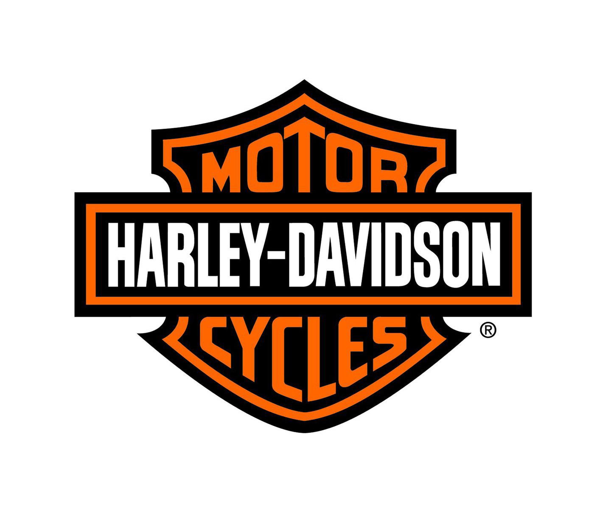

홈 > 브랜드 매거진 > 할리데이비슨
할리데이비슨
할리데이비슨은 모터사이클보다 자유와 소속감의 의식을 더 강하게 판매한다. 제품은 이동수단이지만 브랜드의 핵심은 엔진음, 라이딩 문화, 커뮤니티, 반항적 이미지가 결합된 정체성 경험이다.
산업 분야 모빌리티 · 공개 등급 매거진 완성 · 브랜드 평가 5 ★


한눈에 보는 브랜드
할리데이비슨은 모터사이클보다 자유와 소속감의 의식을 더 강하게 판매한다. 제품은 이동수단이지만 브랜드의 핵심은 엔진음, 라이딩 문화, 커뮤니티, 반항적 이미지가 결합된 정체성 경험이다.
브랜드 관점
할리데이비슨은 모터사이클보다 자유와 소속감의 의식을 더 강하게 판매한다. 제품은 이동수단이지만 브랜드의 핵심은 엔진음, 라이딩 문화, 커뮤니티, 반항적 이미지가 결합된 정체성 경험이다.
시작과 성장
할리데이비슨은 1903년 미국 위스콘신 주 밀워키에 설립된 모터사이클 제조업체이다. 윌리엄 할리(William Harley)와 아더 데이비슨(Arthur Davidson)이 작은 작업장에서 시작한 할리데이비슨은 현재 세계 1위 모터사이클 브랜드로 자리 잡았다.
브랜드 아이덴티티
할리데이비슨은 전 세계에 많은 마니아층을 보유하고 있다. 심장박동 같은 강한 엔진 소리와 자유를 연상시키는 브랜드 이미지는 할리데이비슨의 강력한 아이덴티티를 보여준다.
'H.O.G.'라 불리는 브랜드 커뮤니티는 라이더들의 충성심을 강화하고 할리데이비슨에 열광하게 만드는 핵심요소가 되었다.
제품과 서비스
대표 제품과 서비스 정보는 편집 검수 후 공개됩니다.
현재 상태
타임라인
BI/CI 변천사
함께 읽을 브랜드
 모빌리티 · 편집 검수Elf
모빌리티 · 편집 검수ElfElf는 1966년에 기록된 Energy 계열의 브랜드 아이덴티티 사례입니다. Jean-Roger Rioux, Signe & Fonction가 아이덴티티 작업의 디자...
 모빌리티 · 편집 검수Mobil
모빌리티 · 편집 검수MobilMobil는 1966년에 기록된 Energy 계열의 브랜드 아이덴티티 사례입니다. Chermayeff & Geismar가 아이덴티티 작업의 디자이너로 기록되어 있습니...
 모빌리티 · 편집 검수AGIP
모빌리티 · 편집 검수AGIPAGIP는 1971년에 기록된 Energy 계열의 브랜드 아이덴티티 사례입니다. Bob Noorda, Unimark International가 아이덴티티 작업의 디자...
Lo
London Electricity Board
모빌리티 · 편집 검수London Electricity BoardLondon Electricity Board는 1971년에 기록된 Energy 계열의 브랜드 아이덴티티 사례입니다. HDA International, FHK Henr...
PA
PAM
모빌리티 · 편집 검수PAMPAM는 1965년에 기록된 Energy 계열의 브랜드 아이덴티티 사례입니다. Total Design, Benno Wissing, George Koizumi, Pie...
 모빌리티 · 편집 검수Repsol
모빌리티 · 편집 검수RepsolRepsol는 2025년에 기록된 Energy 계열의 브랜드 아이덴티티 사례입니다. Saffron가 아이덴티티 작업의 디자이너로 기록되어 있습니다. 로고, 타입, 컬...
 모빌리티 · 편집 검수Shell
모빌리티 · 편집 검수ShellShell는 1971년에 기록된 Energy 계열의 브랜드 아이덴티티 사례입니다. Raymond Loewy가 아이덴티티 작업의 디자이너로 기록되어 있습니다. 로고,...
 모빌리티 · 편집 검수TEPCO
모빌리티 · 편집 검수TEPCOTEPCO는 1987년에 기록된 Energy 계열의 브랜드 아이덴티티 사례입니다. Kazumasa Nagai, Nippon Design Center가 아이덴티티 작업...